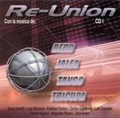

| Artist: | Various Artists |
| Title: | Re-Union |
| Label: | El Cozo Records |
| Length(s): | 46+62 minutes |
| Year(s) of release: | 2003 |
| Month of review: | [03/2004] |
| 1) | Entera Para Amar | 5.22 |
| 2) | Vuela Pequena | 3.18 |
| 3) | Nena Que Andas | 4.41 |
| 4) | La Tormenta | 6.37 |
| 5) | Diferencia En Blues | 5.42 |
Tricupa
| 6) | Tricupa Reino Miel | 4.05 |
| 7) | Vuelo Prenatal | 4.26 |
| 8) | Sol Celestial | 3.03 |
| 9) | Metro Patron | 4.01 |
| 10) | La Ventana II | 5.49 |
Disc 2: Jalea
| 1) | La Ventana 1 | 4.14 |
| 2) | Melosa | 4.32 |
| 3) | Helicoides | 3.54 |
| 4) | Jueves | 3.38 |
Redd
| 5) | Reyes En Guerra | 7.37 |
| 6) | Assecino Sentimental | 8.06 |
| 7) | La Esmeralda | 6.25 |
| 8) | Dedos Tristes | 8.18 |
| 9) | Matinee | 11.11 |
| 10) | Parto | 4.08 |
Vuela Pequena opens percussively, following by American style electric guitars. This plain rock with a very plain rhythm section. Not something for a progressive rock site. Nena Que Andas continues the blues easy going style of the band. There is nothing which distinguishes it from other bands in this vein. In fact, there is something of Black Velvet in here, but without the vocal power.
La Tormenta is a bit longer than the other tracks, and opens with rain sounds, fitting in very well with view from the bus I am currently being drive around in. The band takes more care of its atmospheres on this one, but the music continues. A bit of Led Zeppelin and Rush in here, but not their most characteristic side, and a bit of a Gabriel percussive feel as well. The final track by Tango is Diferencia En Blues. Of course, this is a blues, with plenty of moody guitarwork, some wordless vocals and an okay melody.
Tricupa continues with five of their tracks. The vocals are in Brazilian of course, the vocals higher and more likable also, mainly because of the vocal melodies, on Tricupa Reino Miel for instance, are much more distinctive. The band song also includes some female backing vocals which add some colour making this into a somewhat sugary song, but effective nonetheless. Links to the Italian progressive pop music from the seventies then seem obvious. Although Vuelo Prenatal is not instrumental, the Steve Howish guitar work is the most striking element. We are now arriving in progressive rock territory and a nice landscape it is. Easy going in most places, with an occasional outburst in the vocal section. Sol Celestial has the lyrical vocals, soft voiced one might say typical for Southamerican bands. Very ballad like, very sweet. The guitar player has great command of his instrument, especially as regards the emotion conveyed.
Metro Patron is more upbeat, with the vocals doubled, not always succesful though. The blues and organ feel is quite apparent here, as are the strumming acoustic guitars. The music does have a progressive feel, especially the alternation between the outspoken vocal parts and the restless instrumental side. La Ventana II closes down disc I. Elements of Yes return here by way of the guitar, the song is like more of the Tricupa songs, a plaintive lament. The song becomes louder and more bombastic at the end, but the backing vocals only tend to confuse issues. Still, Tricupa offers a good Southamerican take on the Yes sound with emotive vocals and guitar playing.
We continue on disc two with Jalea. Interesting that La Ventana 1 seems to be a precursor to the final track on the first album, and yet the band is different! This one is a lot moodier, with long stretched sounds on guitar, very introspective. There is a warmness that pervades this song, something that brings about the spectre of Genesis. One if the catchiest tracks on the album is the melodious Melosa. The la-la-la of the female backing vocals easily buries itself in your mind. A bit too poppy for most I would think, this is still a very likable song to hum along with. Helicoides is more in acoustic vein, a bit too languid for my tastes. Jueves closes down the rather short section for this band, surprisingly with something akin surf rock. Again a bit too straightforward.
Redd is the only I know, and that only scarcely. If I would review cd's only by looking at the song lengths, then this should easily be the proggiest band of them all. However, since Tricupa is the most proggy band so far and Tango has longer tracks I have my reservations. Reyes En Guerra opens the Redd set, and does so in a moody fashion combining elements of Floyd (occasional guitars and synths) to a nice build-up. Only a after a few minutes or so, does the guitar interject some sharper elements. The vocalists seem to me the same as singing on the Tricupa songs. A dark and moody track, with a few nods to Yes in the conclusion. The vocals are more daring, although not necessary more likable.
Assecino Sentimental is also more spun out, more instrumental, leaning even to the jazzrock side, while the vocals are quite sad and the undercurrent bluesy. Elements of Pink Floyd can be heard, while we even hear some intricate instrumental passages among the powerful vocals. What is a bit disturbing is that the mix is a bit off, making parts of the recording too loud in comparison with others. Too bad. The middle part features sugary strings and piano, while the chorus is quite a bit louder and more emotive. At the end the vocalist really gets into it.
La Esmeralda opens with friendly acuostics. Again pleasant enough melodies are placed with a typically Southamerican, melodic symphonic melodies. Dedos Tristes has some really good bits, but the vocal melodies tend to start to sound a bit similar on these two albums, likely enough because many of the vocals seem to be shared among the bands. Still, one of the better songs on the albums, and also quite interesting for the audience of this site. The guitar work tends to be quite rowdy here.
The longest track on these albums is Matinee, just crossing the eleven minute mark. It all starts out quietly enough, with an easy bluesy gait and subtle guitar playing. Like its predecessor a good track, similar in style to Nektar's Listen. Parto is the up-beat closer, a bit too rocky for my tastes.